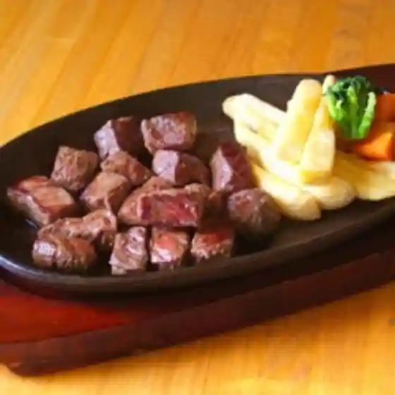

Furusato Taiken Workshop
Iwaizumi, Iwate · 0194-22-2303 · Official / source link
Kyodoryori (Donguri Ryori Hoka)
Iwaizumi, Iwate · 0194-22-4432 · Official / source link
Yotteke Market
Iwaizumi, Iwate · 0194-25-4582 · Official / source link

Resutoran Iwaizumi (Roadside Station Iwaizumi Nai)
Iwaizumi, Iwate · 0194-22-4432 · Official / source link
Hama no Eki Omoto Ai Tsuchi Kan
Iwaizumi, Iwate · 0194-32-3288 · Official / source link
Ryusen Hora Seishonen Ryoko Village
Iwaizumi, Iwate · 0194-22-2566 · Official / source link
Iwate Iwaizumi Jun no Koya
Iwaizumi, Iwate · 0194-22-3245 · Official / source link
Ryusen Hora no Mizu
Iwaizumi, Iwate · 0194-22-4432 · Official / source link
Kyodoryori (Tofu Dengaku Hoka)
Iwaizumi, Iwate · 019-681-5458 · Official / source link
Iwaizumi Tankaku Ushi
Iwaizumi, Iwate · 0194-22-4432 · Official / source link
Kyodoryori (Hatto Hoka)
Iwaizumi, Iwate · 0194-22-4441 · Official / source link
Ryusen Hora Resutohausu
Iwaizumi, Iwate · 0194-22-2270 · Official / source link
Nakamatsu Ya
Iwaizumi, Iwate · 0194-22-3225 · Official / source link
Ryusen Hora Wakka
Iwaizumi, Iwate · 0194-22-8718 · Official / source link
Kokorozashi Tameya
Iwaizumi, Iwate · 0194-22-2226 · Official / source link
Mori no Takara Matsutake Sake
Iwaizumi, Iwate · 0194-22-3211 · Official / source link
Furusato Yakuzen Heri Ki
Iwaizumi, Iwate · 0194-22-5220 · Official / source link
Hayasaka Kogen Bijita Center
Iwaizumi, Iwate · 0196-81-5259 · Official / source link
Izumi Kin Shuzo
Iwaizumi, Iwate · 0194-22-3211 · Official / source link
Roadside Station (Mita Kai Bunko)
Iwaizumi, Iwate · 0194-25-4311 · Official / source link
Roadside Station (Iwaizumi)
Iwaizumi, Iwate · 0194-22-4432 · Official / source link
Hayasaka Highlands
Iwaizumi, Iwate · 0194-22-2111 · Official / source link
Akka Hora
Iwaizumi, Iwate · 0194-24-2011 · Official / source link
Ryusen Hora to Ryusen Shindo Science Museum
Iwaizumi, Iwate · 0194-22-2566 · Official / source link
Goten Saki Shizen Kyuyo Hayashi
Iwaizumi, Iwate · 0194-22-2111 · Official / source link
Kori Watari Koryu Shisetsu
Iwaizumi, Iwate · 0194-24-2111 · Official / source link
Kuma no Hana Lookout
Iwaizumi, Iwate · 0194-22-2111 · Official / source link
Okawa Shichi Taki
Iwaizumi, Iwate · 0194-22-2111 · Official / source link
U Rei Razan
Iwaizumi, Iwate · 0194-22-2111 · Official / source link
Akka Mori
Iwaizumi, Iwate · 0194-22-2111 · Official / source link
Shigeru Shi Kaigan to Kyoryu no Kaseki
Iwaizumi, Iwate · 0194-22-2111 · Official / source link
Hitsu Shu Marsh no Mizubasho
Iwaizumi, Iwate · 0194-22-2111 · Official / source link
Nambu Ushi Tsui Uta Hassho no Chi
Iwaizumi, Iwate · 0194-22-2111 · Official / source link